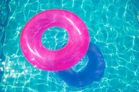
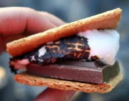
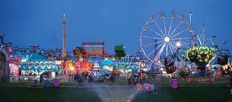

Summer
Ah, Summer... I would imagine that would be everyone's favorite season, right? This is the only season that you have a full three months to go outside and do anything you feel like without the weather getting in the way! There's almost no way you could run out of things to do! And on top of that, students of any age get all those three months off with no restrictions... other than your parents, I suppose. Some of the endless ideas include:
Go to Concerts

Come on, we all know how bad everyone has wanted to attend a Taylor Swift tour stop in Missoula or pray for a visit from Kevin Hart in Billings. Even though these amazing dreams are unlikely, there are still a few famous musicians that swing by some locations in our great Treasure State. Don't miss out on these once-in-a-lifetime opportunities to see some of the best celebrities around!
Go Camping and Make S'mores
What is more American than gathering around the campfire to laugh, tell scary stories and secrets, make the world famous s'more? This activity is a must during the summer! These are some good times to tell stories and reveal your deepest secrets and feelings because, as we all know, what happens at the campfire stays at the campfire.
Attend A State Fair
In most places, when the state fair rolls around, people from every corner of the area roll in to meet up friends and family, catch a rodeo, go to some live events, ride some rides, and most importantly, gouge themselves with some of the most unhealthy food known to man. You'll only get a certain amount of chances to have fun with all of your friends while you're young because, when you get out of high school, you may not ever see all of them together in one place ever again (Also, never spend any money on the carney games. The biggest rip-offs ever!)